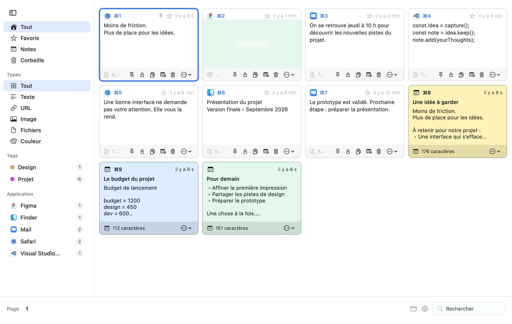
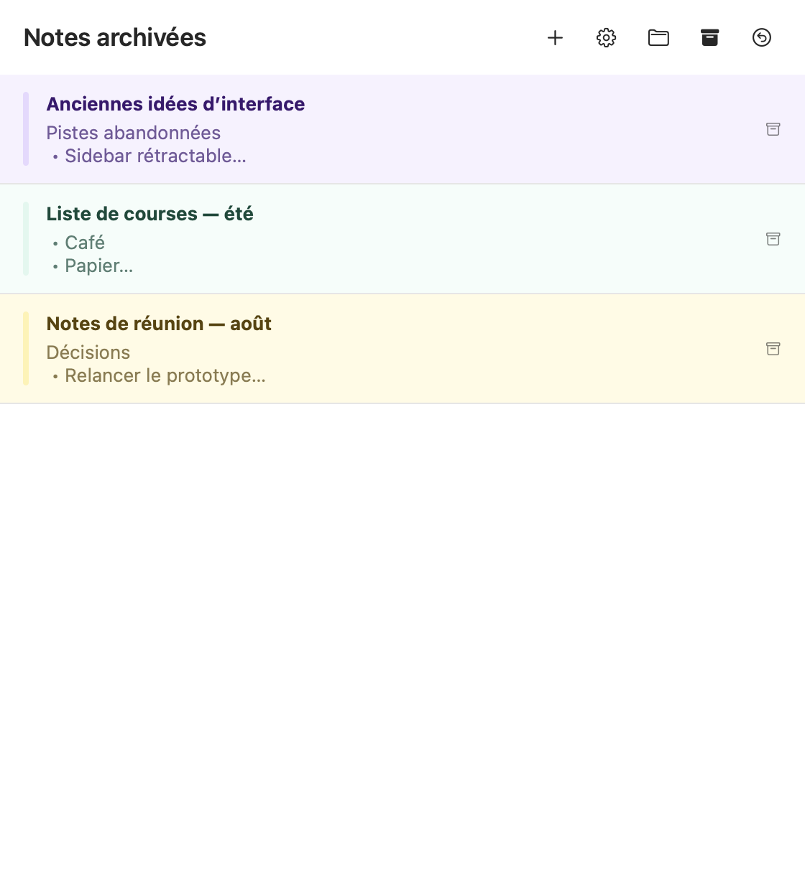

Copiez. Retrouvez. Gardez.
PKbrain mémorise tout ce que vous copiez — textes, images, liens, couleurs et fichiers. Retrouvez un élément, recollez-le, ou transformez-le en sticky note. Une seule app native, pensée pour le clavier.
Deux outils. Une seule fenêtre.
Votre historique de presse-papiers et vos sticky notes vivent enfin ensemble — et se parlent.
L'historique qui vous rend vos copies
Recherche instantanée, filtres par application source ou par type, épingles pour ce qui compte. Appuyez sur Entrée pour recoller l'élément sélectionné directement dans votre dernière app.

Chaque copie peut devenir une note
⌘↵ sur un élément : il devient une sticky note, prête à continuer de grandir. Calcul inline, icônes inline, thèmes pastel — et chaque note est un fichier Markdown simple et lisible.
Archivez, sans jamais perdre
Une note archivée quitte le bureau sans être supprimée. Elle ne se rouvre plus au lancement ni avec « Afficher toutes les notes », mais reste au chaud dans la vue Archives — à un clic de revenir.

Les détails qui comptent
Tout ce qu'il vous faut, sans quitter le clavier.
Palette de commandes
⌘K pour chercher vos notes, en ouvrir une, ou en créer une nouvelle.
Raccourcis globaux
Nouvelle note, dernière note, afficher toutes les notes — depuis n'importe quelle app.
Intelligence inline
Calculs, conversions d'unités, plus de 300 icônes inline.
Thèmes pastel
Une douzaine de couleurs, contraste de texte automatique, zoom et monospace.
Markdown lisible
Une note, un fichier .md dans ~/Documents/PKbrain — à vous pour toujours.
Mises à jour intégrées
Canal Stable ou Dev, mises à jour signées, sans compte sur un store.
Installez en une minute
Choisissez votre canal — DMG, Homebrew ou curl. La même build signée.
Téléchargement direct
Ouvrez le DMG, glissez PKbrain dans Applications. C'est prêt.
Télécharger le DMGHomebrew
Installez et mettez à jour via le tap mondary.
brew install --cask mondary/tap/pkbrainbrew upgrade --cask pkbrainCurl
Le même DMG, directement depuis la dernière release.
curl -LO https://github.com/mondary/PKbrain/releases/latest/download/PKbrain.dmgNécessite macOS 13 ou plus récent · Build Apple Silicon (arm64) · Licence MIT